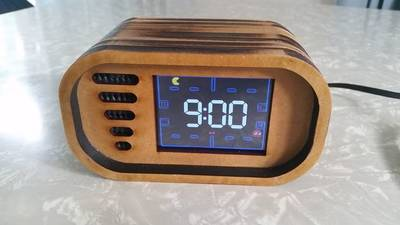

2017-03-16 - Nº 98

Editorial
Esta é a Newsletter Nº 98 que se apresenta com o mesmo formato que as anteriores. Se gostar da Newsletter partilhe-a!
Todas as Newsletters encontram-se indexadas no link.
Esta Newsletter tem os seguintes tópicos:
Foi a 16 de Março de 1789 que nasceu Georg Ohm. Este físico e matemático alemão, ficou conhecido pela Lei que tem o seu nome. Enquanto professor, Ohm começou as suas pesquisas com a nova célula electroquímica que tinha sido inventada por Alexander Volta e, usando um equipamento por si criado, descobriu que existe uma proporcionalidade directa entre a diferença de potencial (tensão) aplicada a um condutor e a corrente eléctrica resultante. Faz, também anos hoje que nascia Richard Stallman. Nascido em Nova-Iorque, este norte-americano foi o responsável pelo lançamento em 1983 do movimento open-source GNU Project. É o criador do famoso GNU Emacs e participou a criação do Compilador de C da GNU - GCC. É o fundador da FSF - Free Software Foundation e foi um pioneiro na definição do conceito de "Copyleft". Deste conceito nasceu posteriormente a licença GPL - GNU General Public License. Faz anos hoje também o norte-americano Andrew S. Tanenbaum. Este professor de ciências da computação é conhecido por ter criado um clone do UNIX, designado por MINIX e pelos seus livros relacionados com sistemas operativos. O seu livro "Operating Systems: Design and Implementation" e o MINIX serviram de inspiração para que Linus Torvalds criasse o Linux.
Esta semana ficámos a saber que a China está a preparar uma missão tripulada à Lua. A Intel anunciou a aquisição da empresa de origem Israelita Mobileye. Esta empresa é uma empresa tecnológica que desenvolve sistemas de apoio avançado à condução. Este passo é sem dúvida uma consolidação do interesse que a Intel tem na área dos veículos de condução autónoma e que vai ser sem duvida o grande desafio dos tempos mais próximos. Por fim, a Google anunciou um novo codificador de ficheiros JPEG designado por Guetzli, que mantendo a compatibilidade com o formato consegue taxas de compressão 35% melhores que os atuais sistemas, mantendo a qualidade. Este sistema foi disponibilizado em Open-Source.
Na Newsletter desta semana apresentamos diversos projetos de maker assim como alguns modelos 3D que poderão ser úteis. É apresentado também dois livros, um sobre uma coleção de circuitos com Op Amp e outro sobre o Raspberry Pi para a Educação. Saiu também a revista newelectronics de 14 de Março.
 João Alves ([email protected])
João Alves ([email protected])
O conteúdo da Newsletter encontra-se sob a licença  Creative Commons Attribution-NonCommercial-ShareAlike 4.0 International License.
Creative Commons Attribution-NonCommercial-ShareAlike 4.0 International License.
Novidades da Semana ^
China developing manned space mission to the moon: State media
"China is building a manned spacecraft capable of sending astronauts to the moon as well as near-Earth orbit flight, according to Chinese state media. The official newspaper of the Ministry of Science and Technology of China cited system chief architect Zhang Bainan who claimed the craft is being designed to carry as many as six astronauts. The newspaper, Science and Technology Daily, quoted Zhang Bainan Tuesday as saying China wished to catch up with international standards of space exploration." [...]
Intel Acquisition of Mobileye
"Intel and Mobileye announced on March 13 that they have entered into a definitive agreement pursuant to which Intel will acquire Mobileye. Under the terms of the agreement, a subsidiary of Intel will commence a tender offer to acquire all of the issued and outstanding ordinary shares of Mobileye for $63.54 per share in cash, representing a fully-diluted equity value of approximately $15.3 billion and an enterprise value of $14.7 billion. The acquisition will couple the best-in-class technologies from both companies, including Intel’s high-performance computing and connectivity expertise and Mobileye’s leading computer vision expertise to create automated driving solutions from the cloud through the network to the car. The combination is expected to accelerate innovation for the automotive industry and position Intel as a leading technology provider in the fast-growing market for highly and fully autonomous vehicles. Intel estimates the vehicle systems, data and services market opportunity to be up to $70 billion by 2030. The transaction extends Intel’s strategy to invest in data-intensive market opportunities that build on the company’s strengths in computing and connectivity from the cloud, through the network, to the device." [...]
Announcing Guetzli: A New Open Source JPEG Encoder
"At Google, we care about giving users the best possible online experience, both through our own services and products and by contributing new tools and industry standards for use by the online community. That’s why we’re excited to announce Guetzli, a new open source algorithm that creates high quality JPEG images with file sizes 35% smaller than currently available methods, enabling webmasters to create webpages that can load faster and use even less data. Guetzli [guɛtsli] — cookie in Swiss German — is a JPEG encoder for digital images and web graphics that can enable faster online experiences by producing smaller JPEG files while still maintaining compatibility with existing browsers, image processing applications and the JPEG standard. From the practical viewpoint this is very similar to our Zopfli algorithm, which produces smaller PNG and gzip files without needing to introduce a new format; and different than the techniques used in RNN-based image compression, RAISR, and WebP, which all need client and ecosystem changes for compression gains at internet scale." [...]
Outras Notícias
- BeagleBone® Blue
- Cypress Unveils PSoC 6, the Industry's Lowest Power, Most Flexible MCU Architecture, Setting a New Standard for Battery-powered, Secure IoT Devices
- Beijing to release national artificial intelligence development plan
- New tinyAVR® MCUs Increase System Throughput While Lowering Power Consumption in Embedded Applications
- Developers aim for Japan’s fastest supercomputer
- PUFFER Concept Pop-Up Flat Folding Explorer Robots
Ciência e Tecnologia ^
Robot uses social feedback to fetch objects intelligently
"If someone asks you to hand them a wrench from a table full of different sized wrenches, you’d probably pause and ask, “which one?” Robotics researchers from Brown University have now developed an algorithm that lets robots do the same thing — ask for clarification when they’re not sure what a person wants. The research, which will be presented this spring at the International Conference on Robotics and Automation in Singapore, comes from Brown’s Humans to Robots Lab led by computer science professor Stefanie Tellex. Her work focuses on human-robot collaboration — making robots that can be good helpers to people at home and in the workplace." [...]
Artificial intelligence and robots to make offshore windfarms safer and cheaper
"The University of Manchester is leading a consortium to investigate advanced technologies, including robotics and artificial intelligence, for the operation and maintenance of offshore windfarms. The remote inspection and asset management of offshore wind farms and their connection to the shore is an industry which will be worth up to £2 billion annually by 2025 in the UK alone. Eighty to ninety percent of the cost of offshore operation and maintenance according to the Crown Estate is generated by the need to get site access – in essence get engineers and technicians to remote sites to evaluate a problem and decide what action to undertake. Such inspection takes place in a remote and hazardous environment and requires highly trained personnel of which there is likely to be a shortage in coming years. The £5m project will investigate the use of advanced sensing, robotics, virtual reality models and artificial intelligence to reduce maintenance cost and effort. Predictive and diagnostic techniques will allow problems to be picked up early, when easy and inexpensive maintenance will allow problems to be readily fixed. Robots and advanced sensors will be used to minimise the need for human intervention in the hazardous offshore environment." [...]
Textile-based wearable electronics and fashion displays
"Articles such as clothes, watches, shoes, and accessories are essential to people around the world. However, going beyond the basic roles and purposes of these items, the concept of “wearability” is rapidly evolving to include computing power and the ability to connect to the internet. In other words, information, communication, and technology (ICT) are beginning to be integrated into wearables. Because wearable electronics can provide a more comfortable and convenient life for wearers, research on and the development of wearables have emerged as major interests both academically and industrially. In particular, a wearable information display for intuitive communication between wearers and wearable devices has attracted a great deal of attention, and it can create additional value in the fashion, military, automobile, and architecture industries while also making functional wearable devices available to all." [...]
New Material Makes it Possible to Record Data with Light
"Russian physicists with their colleagues from Europe through changing the light parameters, learned to generate quasiparticles — excitons, which were fully controllable and also helped to record information at room temperature. These particles act as a transitional form between photons and electrons so the researchers believe that with excitons, they will be able to create compact optoelectronic devices for rapid recording and processing an optical signal. The proposed method is based on the use of a special class of materials called metal-organic frameworks. The study appeared in Advanced Materials. To simplify the description of complex effects in quantum mechanics, scientists have introduced a concept of quasiparticles. One of them which is called exciton is an "electron — hole" pair, which provides energy transfer between photons and electrons. According to the scientific community, this mediation of quasiparticles will help to combine optics with electronics to create a fundamentally new class of equipment — more compact and energy efficient. However, all exciton demo devices either operate only at a low temperature, or are difficult to manufacture which inhibits their mass adoption." [...]
Baidu’s Artificial Intelligence Lab Unveils Synthetic Speech System
"In the battle to apply deep-learning techniques to the real world, one company stands head and shoulders above the competition. Google’s DeepMind subsidiary has used the technique to create machines that can beat humans at video games and the ancient game of Go. And last year, Google Translate services significantly improved thanks to the behind-the-scenes introduction of deep-learning techniques. So it’s interesting to see how other companies are racing to catch up. Today, it is the turn of Baidu, an Internet search company that is sometimes described as the Chinese equivalent of Google. In 2013, Baidu opened an artificial intelligence research lab in Silicon Valley, raising an interesting question: what has it been up to? Now Baidu’s artificial intelligence lab has revealed its work on speech synthesis. One of the challenges in speech synthesis is to reduce the amount of fine-tuning that goes on behind the scenes. Baidu’s big breakthrough is to create a deep-learning machine that largely does away with this kind of meddling. The result is a text-to-speech system called Deep Voice that can learn to talk in just a few hours with little or no human interference." [...]
Brainlike computers are a black box. Scientists are finally peering inside
"Last month, Facebook announced software that could simply look at a photo and tell, for example, whether it was a picture of a cat or a dog. A related program identifies cancerous skin lesions as well as trained dermatologists can. Both technologies are based on neural networks, sophisticated computer algorithms at the cutting edge of artificial intelligence (AI)—but even their developers aren’t sure exactly how they work. Now, researchers have found a way to "look" at neural networks in action and see how they draw conclusions. Neural networks, also called neural nets, are loosely based on the brain’s use of layers of neurons working together. Like the human brain, they aren't hard-wired to produce a specific result—they “learn” on training sets of data, making and reinforcing connections between multiple inputs. A neural net might have a layer of neurons that look at pixels and a layer that looks at edges, like the outline of a person against a background. After being trained on thousands or millions of data points, a neural network algorithm will come up with its own rules on how to process new data. But it's unclear what the algorithm is using from those data to come to its conclusions." [...]
Opening paths to progress with programmable materials
"The job would typically require a team on site using a variety of specialized tools and devices to perform tests and take measurements. Given the many interconnected components of modern bridges, some of which can be difficult to access, the labor is likely to be time-consuming and expensive. Now, says Andrea Richa, imagine the work could instead be done by a “smart” material, composed of many tiny sensors capable of detecting and measuring such things as temperature, traffic, and structural cracks and stresses. This “smart” network of tiny sensors would be achieved through the use of “programmable material” — material that can monitor and respond to its environment — consisting of “self-organizing” particles that could coat the surface of bridge components or any other objects." [...]
SUTD, NTU join SMU in deploying supercomputer for AI research
"The NVIDIADGX-1deep learning supercomputer is winning over universities in Singapore. Singapore University of Technology and Design (SUTD) and Nanyang Technological University (NTU) have deployed the powerful machine for their research projects on artificial intelligence (AI). SUTD will use the DGX-1 at the SUTD Brain Lab to further research into machine reasoning and distributed learning. Under a memorandum of understanding signed earlier this month, NVIDIA and SUTD will also set up the NVIDIA-SUTD AI Lab to leverage the power of GPU-accelerated neural networks for researching new theories and algorithms for AI. The agreement also provides for internship opportunities to selected students of the lab." [...]
So long stiffness: Stanford engineers use soup additive to create a stretchable plastic electrode
"The brain is soft and electronics are stiff, which can make combining the two challenging, such as when neuroscientists implant electrodes to measure brain activity and perhaps deliver tiny jolts of electricity for pain relief or other purposes. Chemical engineer Zhenan Bao is trying to change that. For more than a decade, her lab has been working to make electronics soft and flexible so that they feel and operate almost like a second skin. Along the way, the team has started to focus on making brittle plastics that can conduct electricity more elastic. Now in Science Advances, Bao’s team describes how they took one such brittle plastic and modified it chemically to make it as bendable as a rubber band, while slightly enhancing its electrical conductivity. The result is a soft, flexible electrode that is compatible with our supple and sensitive nerves." [...]
Jonsson School Engineers Shrink Microscope to Dime-sized Device
"Researchers at The University of Texas at Dallas have created an atomic force microscope on a chip, dramatically shrinking the size — and, hopefully, the price tag — of a high-tech device commonly used to characterize material properties. “A standard atomic force microscope is a large, bulky instrument, with multiple control loops, electronics and amplifiers,” said Dr. Reza Moheimani, professor of mechanical engineering at UT Dallas. “We have managed to miniaturize all of the electromechanical components down onto a single small chip.”" [...]
Ultrashort light pulses for fast 'lightwave' computers
"Extremely short, configurable "femtosecond" pulses of light demonstrated by an international team could lead to future computers that run up to 100,000 times faster than today's electronics. The researchers, including engineers at the University of Michigan, showed that they could control the peaks within the laser pulses and also twist the light. The method moves electrons faster and more efficiently than electrical currents—and with reliable effects on their quantum states. It is a step toward so-called "lightwave electronics" and, in the more distant future, quantum computing, said Mackillo Kira, U-M professor of electrical engineering and computer science who was involved in the research." [...]
Nanoscale logic machines go beyond binary computing
"Scientists have built tiny logic machines out of single atoms that operate completely differently than conventional logic devices do. Instead of relying on the binary switching paradigm like that used by transistors in today's computers, the new nanoscale logic machines physically simulate the problems and take advantage of the inherent randomness that governs the behavior of physical systems at the nanoscale—randomness that is usually considered a drawback. The team of researchers, Barbara Fresch et al., from universities in Belgium, Italy, Australia, Israel, and the US, have published a paper on the new nanoscale logic machines in a recent issue of Nano Letters." [...]
Is Reliable Artificial Intelligence Possible?
"Will artificial intelligence (AI) change the nature of work? For EPFL theoretical biologist Marcel Salathé, the answer is invariably yes. To him, a more fundamental question that needs to be addressed is who owns that artificial intelligence? “We have to hold AI accountable, and the only way to do this is to verify it for biases and make sure there is no deliberate misinformation,” says Salathé. “This is not possible if the AI is privatized.” AI is both the algorithm and the data. So what exactly is AI? It is generally regarded as “intelligence exhibited by machines”. Today, it is highly task specific, specially designed to beat humans at strategic games like Chess and Go, or diagnose skin disease on par with doctors’ skills. On a practical level, AI is implemented through what scientists call “machine learning”, which means using a computer to run specifically designed software that can be “trained”, i.e. process data with the help of algorithms and to correctly identify certain features from that data set. Like human cognition, AI learns by trial and error. Unlike humans, however, AI can process and recall large quantities of data, giving it a tremendous advantage over us." [...]
Cooling to absolute zero mathematically outlawed after a century
"IT’S an absolute. Mathematics has put speed limits on cooling, finally proving a century-old law – that unless you have infinite time and resources, you can’t get to the absolute zero of temperature. In 1906, German chemist Walther Nernst formulated the heat theorem, which states that as a perfect crystal approaches the absolute zero point of 0 kelvin (-273.15°C), the system’s entropy also goes to zero. This work earned him the 1920 Nobel prize in chemistry. The rule was controversial, with heavyweights like Albert Einstein and Max Planck debating it and introducing their own formulations. In 1912, Nernst defended his version by adding another clause, the unattainability principle, which states that absolute zero is physically unreachable. Taken together, these two rules make up the modern third law of thermodynamics. But because earlier arguments focused only on specific mechanisms or were crippled by questionable assumptions, some physicists have always remained unconvinced of its validity." [...]
"Instrument Flight" to the Inner Ear
"A team of surgeons and engineers of Inselspital, Bern University Hospital, and the ARTORG Center for Biomedical Engineering Research, University of Bern (Switzerland), have developed a high-precision surgical robot for cochlear implantation. In the same way that avionics allow a pilot to fly a plane by instrument solely based on read-outs from the cockpit, the surgical robot developed by the researchers for RCI has the capabilities to perform surgery that a surgeon cannot carry out manually without a robot. To embed an electronic cochlear implant device into the ear of a deaf patient, the surgeon has to create a precise access from behind the ear, through the skull bone all the way into the inner ear. The implant electrode that bridges the damaged part of the inner ear to allow the patient to hear again is then carefully inserted into the cochlea through the access in the bone. Currently this procedure is carried out manually and the ear, nose and throat surgeon directly views the access into the cochlea through the opening in the skull bone." [...]
Documentação ^
A documentação é parte essencial do processo de aprendizagem e a Internet além de artigos interessantes de explorar também tem alguma documentação em formato PDF interessante de ler. Todos os links aqui apresentados são para conteúdo disponibilizado livremente pelo editor do livro.
Op Amp Circuit Collection
"This application report provides basic circuits of the Texas Instruments op amp collection." [...]

newelectronics 14 Março 2017
"New Electronics is a fortnightly magazine focusing on technological innovation, news and the latest developments in the electronics sector. Downloadable as a digital page turner or pdf file, or offered as a hard copy, the New Electronics magazine is available in a format to suit you." [...]
The Raspberry Pi Education Manual
"This manual is a bit different. It was written entirely by unpaid volunteers, all of whom are keen to share their expertise and enthusiasm for computing with as many people as possible. What all of these contributors have in common, apart from a youth spent mainly indoors in front of ZX Spectrums and Commodore 64s, is that they’re all members of the organisation Computing at School (CAS). To find out more about CAS and its work promoting the teaching of computer science, head over to http://www.computingatschool.org.uk" [...]
Projetos Maker ^
Diversos Projetos interessantes.
Arduino Powered Four Letter Word Generator
"Build an Arduino-powered version of the “Four Letter Word Generator” (FLW). This version generates “words” on the fly – it does not use a list. The “original” version from the 1970’s used B7971 nixie alphanumeric tubes. These tubes are getting hard to find and they’re certainly expensive. They also require interfacing with high voltage and an understanding of multiplexing. This version uses a slightly more modern and easier to use display while maintaining the overall glowy, multi-segment look of the original. The Siemens DL2146T is a 4-character, 16-segment (plus dot) intelligent display. It has built-in drive and an ASCII font table. You basically send it seven bits of ASCII along with a couple more bits that select the position and control reset, blanking and chip select. It uses “a lot” of pins but we’re not doing anything else so the available outputs on a ATMEGA168 are plenty." [...]
Voltage Booster
"This is a simple boost converter circuit. It takes in a low voltage input of around 3 to 9 volts and gives an output of 100 to 200 volts. You cannot use it to power anything though, since the voltage is right across the capacitor, and it falls rapidly with loading. However it can shock a person. I made this using material easily available in any electrical shop, and some special electronic components." [...]
Tesla Coil
"The Makerspace at Østfold University College were holding an competition where the theme was to make something with an WOW-factor, so our group decided to make an tesla coil. Just a tl;dr: the project was built with no prior knowledge on tesla coils so the results were not what we were hoping for, becasue we could only get it to light up halogen light tube." [...]
DIY Speedometer on Arduino
"This project based on Arduino, it will measure time of one revolution of wheel, then divide wheel's lenght on this time, and it will be the speed. Revolutions of wheel will be measured by magnet and hall sensor. I used servo motor with arrow and scale to show the speed, it looks like "analog". Also I used 7 segment display to show distance (odometer), also arduino write odo in its EEPROM after bicycle is stopped, so odo keeps in Arduino and not clears after system reboot." [...]
Ai Weather Presenter #StephenHawking
"Over the last 18 months I built an autonomous GPRS weather station and, in the final step, created an audio interface to communicate the data with Stephen Hawking's voice emulator, the Emic2. This gadget reads an online php file which in turn reads the weather station database and reacts emotively to high windspeeds and atmospheric pressure changes. Don't worry folks - I'm going to give Stephen his voice emulator back when I've finished!" [...]
Every possible connection
"The Raspberry Pi does not really need an introduction: Linux plus some tinkering pins - who could possibly ask for more? It has all the features needed to create a flexible and powerful programming / debugging tool for microcontrollers. It can even run entire toolchains for cross-compiling for a wide variety of these µCs. One tricky aspect, which is probably the main stumbling block if you’ve ever looked into trying out things with a 32-bit ARM-based µC, is how to get the software onto those chips. There are many ways, well-researched on this weblog and elsewhere, but they all have little quirks - from trouble with connecting everything together, to not being portable across Win/Mac/Lin, to requiring a special programmer - it quickly turns into a chicken-and-egg kind of adventure: YOU ARE IN A MAZE OF TWISTY LITTLE PASSAGES, ALL ALIKE" [...]
ZIF Attiny "Arduino As ISP" Programmer With External Clock
"Tired of having to carefully insert and remove your Attiny84 or 85 from the jaws of a dip socket, risking with every pull the possibility of bending the legs beyond straightening or worse, tearing them clean off?! If so, this instructable is for you! Cheesy sales pitch aside, this setup allows you to easily and safely program an Attiny45/85/44/84 with the ability to use an external clock if necessary!" [...]

Retro Pac-Man Clock
"Build an interactive Pac-Man bedside clock, with a touch screen, and animated Pac-Man figures. This cool project is surprisingly simple to make and is a great gift for those nostalgic Pac-Man addicts. As well as being able to interact with the Pac-Man game, you can record a sound of your choice for the alarm." [...]
Neopixel LED Eyeball controlled by Nunchuck
"I modified the Neopixel LED Eyeball to be controlled by the Nintendo Wii Nunchuck Controller." [...]
Virtual Arduino Tennis
"This project has 3 parts: the game board/display, the controller, and the master router (Python script). The display is a 15x10 neopixel matrix that runs off of an Arduino Nano. It handles the game logic and input from the Python Script running off of a host computer. It displays a ball that grows and moves further down the matrix- giving an illusion of depth and the ball coming at you. If it detects that the ball is hit the ball will be redrawn going 'away' from you." [...]
Texas Instruments MSP-EXP432 - MultiTasking
"This is Texas Instruments MSP-EXP432 multitasking tutorial. Here you can see how to run multiple sketches that can communicate with main sketch, where all global variables are defined. Software used for this project is Energia. It's IDE very similar to Arduino IDE, but you must download some drivers too. We will use ultrasonic and color sensor simultaneously. They won't interrupt each other. If ultrasonic sensor distance is under 5 cm and if color sensor detects red value under 60, LED will turn on." [...]
4-Digit Yellow Binary Counter
"This project is the last project of the trilogy of binary counters before beginning to work with my Binary Clock. They are Green Binary Counter, 2-Digit Binary Counter, 4-Digit Yellow Binary Counter, this project. In the present project, I'll be using 4-IC7490, 1-IC555, 16 diodes: 1N914, 16-5mm LED, 2-4.7K resistor, 1-100uF capacitor, and 1-Normally Closed (NC) Push Button Switch." [...]
Physical Pattern Lock
"The pattern lock of Android device fascinates me. From the inspiration of Android pattern lock I made a physical pattern lock using IR sensors and Arduino microcontroller. You can use the lock where some sort of security is required such as your home or office." [...]
Pantograph Engraver
"A Pantograph Engraver is a very handy piece of equipment, for the hobbyist. This machine was developed by me for engraving name plates, it could also be used for various other purposes... Like Cutting miniature parts on wood and acrylic with a template. It uses a sewing machine motor coupled to bearing driven shaft... other types of engraving motors too could be mounted.. provided they are mounted in the right place or plane.. this engraver was constructed around 6 months ago..and is in its assembled form, therefore photographs from various angles will be presented to understand the construction.." [...]
Analyzing the vintage 8008 processor from die photos: its unusual counters
"The revolutionary Intel 8008 microprocessor is 45 years old today (March 13, 2017), so I figured it's time for a blog post on reverse-engineering its internal circuits. One of the interesting things about old computers is how they implemented things in unexpected ways, and the 8008 is no exception. Compared to modern architectures, one unusual feature of the 8008 is it had an on-chip stack for subroutine calls, rather than storing the stack in RAM. And instead of using normal binary counters for the stack, the 8008 saved a few gates by using shift-register counters that generated pseudo-random values. In this article, I reverse-engineer these circuits from die photos and explain how they work. The image below shows the 8008's tiny silicon die, highly magnified. Around the outside of the die, you can see the 18 wires connecting the die to the chip's external pins. The 8008's circuitry is built from about 3500 tiny transistors (yellow) connected by a metal wiring layer (white). This article will focus on the stack circuits on the right side of the chip and how they interact with the data bus (blue)." [...]
gesture-keyboard
"Gesture keyboard is a library used to convert accelerometer data to a sequence of characters and sentences." [...]
HF Antenna Analyser With Arduino and DDS Module
"In this Instructable I'll show you how I built a low-cost antenna analyser which can measure an antenna and display its VSWR over any or all of the HF frequency bands. It will find the minimum VSWR and corresponding frequency for each band but also will display a realtime VSWR for a user-selected frequency to facilitate antenna adjustment. It also has a USB port on the back for outputting frequency and VSWR data, to allow graph-plotting on a PC. The USB port can also be used to reflash the firmware if needed." [...]
wozItDo: Tiny IQ puzzel, BIG challenge
"I think of this puzzle as the electronic equivalent of those annoying "IQ" puzzles (e.g. where you have to get two parts apart). A wozItDo has just one button and three LEDs and all you have to do is to work out what it does. Beware: it's deceptively tricky and once you think you've cracked it, there's still more. So what's with the name? We'll about 30 years ago I made my first "computer". A 6502 MPU with a keypad, some 7-segment LEDs and a handful of other bits. I was inordinately proud of it but when I showed it off to other people they seemed unimpressed and often asked "But what's it do?" Nothing, really, but that's not the point. When I started playing with the ATTINY85 I was super impressed. It's this understated little 8 pin DIL that costs <$2 but burred inside is the enormous complexity of a full blown ATMEL MCU. And all you need to give it is power. wozItDo is in that spirit. It looks disarmingly simple but there a lot more than first meets the eye. To give you an idea there's about 1200 lines of source code packed away inside that tiny 8 pin chip." [...]
Italian Word Clock
"My passion for Arduino watches, led me to make a "Word Clock", since I live in Italy, I did speak in Italian. For the realization of the project, I was inspired by a tutorial "Word Clock Javelin", I made a few small changes ... and here for you "Word Clock of Italy" In addition to "tell the hours" in Italian, I wanted to add the birthdays of my family (including the cat) . For the construction of the "framework" I used one already made by IKEA, and internal changes I used the material I had at home" [...]
Panel mount 7 segment display with embedded Arduino
"Is not always an easy task to get a good looking finished project if it includes a 7 segment display! The main problem to get an elegant finish is the tight tolerance needed for the rectangular hole cut where the display will be exposed, only accomplished using CNC machining or laser cutting services." [...]
Audio Pitch Shifter
"This article describes a simple device based on an ATtiny85 that takes an audio input, shifts its pitch up or down in real time, and plays it through a loudspeaker. You can increase or decrease the pitch shift using two pushbuttons: For example, you can plug in an mp3 music player or phone, play some music, and change the pitch of a male singer's voice to a female voice as it's playing. Although the result is not hi-fi quality, it's an excellent demonstration of how much you can achieve with a single ATtiny85. The chip first amplifies the input by a factor of x20, digitizes it, stores the samples in a circular buffer under interrupt, reads samples back from the circular buffer under a separate timer interrupt, and finally converts the processed digital signal back to analogue, using high-speed PWM, and outputs it to a loudspeaker. Two pushbuttons cause interrupts which change the pitch shift up or down." [...]
Arduino Programable Thermostat
"This project uses an Arduino Nano, a RTC, a rotary encoder, a Nokia 5110 display and a relay. It allows manual and programmed setting of temperature, and furnace control." [...]
ESP8266 + L298N Motor Drive + Smartphone
"This document is about my attempt to control an Arduino robot with L298N motor drive and AI-Thinker ESP8266. This robot was named UTFPRBot version 1.0. This project explains how to create this Arduino robot. Also, I describe my personal steps to simplify the deployment of programs to control this robot." [...]
Homemade RobotArm Whit Special Homemade Controller
"This built is a little advanced and not easy to make same because it is made from scrap but my idea is, use a part of build or all, if have a RobotArm already you can use code. Or / And Make simple controller with 6 potentiometer or make same as mine controller --- this is first build so it is not beautiful and need to change some things. --- and i am new to ardrino code" [...]
Simple Line Follower Robot With No Programming - Analog Line Follower
"Hi! This is a line follower robot that requires no programming, instead, the behaviour of the robot is determined by an electronic circuit. This build is fairly simple and if you have all the materials it will most likely take less than 2 hours to build and test it." [...]
WinchBot
"Using an Arduino Uno along with a Raspberry Pi for control, hacker “HomoFaciens” came up with this clever delta-style robot. If you were going to make a robot with five servos, many Makers would make a robot arm with them and call it a day. HomoFaciens, however, who is known for making amazing machines with minimal tools and improvised materials, instead made something that seems to be a cross between a delta robot and a Skycam. His device, called “WinchBot,” uses three winches attached to an equilateral triangle frame to move a slider on a central pivoting square rod. This allows the robot’s 5-axis “hand” to be positioned within the robot’s work area. The servos are then tasked with keeping everything in the correct orientation, as well as opening and closing the gripper as needed." [...]
IoT Controlled Planter Lights
"My wife wanted to be able to start planting seeds here in a week and also wanted to have an indoor shelf with lights on which to start them. The plants need significant light, and it's cold enough outside here that we can't have them outside. I designed a set of shelves in Fusion 360, which I then cut on my CNC. If you look below in the Github repository, you can find links to the Fusion project so that you can download the objects and use the milling option to cut them out yourself on your local Makerspace's CNC." [...]
ESP8266 WiFi Analyzer
"This instrucatables show how to make an ESP8266 version WiFi Analyzer clone. WiFi Analyzer is a handy app in Android, it help to visualize the WiFi signal information around you. It is very useful for helping select a right channel for setting a new AP. If you selected a channel that as same as another AP near you, you may encounter interference and degrade the network performance. However, you may not have a Android phone in hand and it is a little bit overkill dedicate an Android phone for WiFi scanning. ESP8266 is good enough for scanning WiFi signal, let's make this handy tools together!" [...]
LunzPi Raspberry Pi Alarm Clock
"Have you ever thought about something for TWO and a half years? I mean, there were some breaks in there. But, from the first idea to the last bit of glue drying on this project... it's been on my mind. Some technological advances greatly helped me finish this project. It was really nice going from a Raspberry Pi B+ to the Pi 2 and enjoying the speed boost!" [...]
IoT Made Simple: Home Weather Station With NodeMCU and OLED
"Let's continuous our IoT exploration, with the NodeMCU. On this tutorial, we will develop a Home Weather Station, where we will display outdoor information as temperature and climate conditions including the present day and a 3 days forecast. Our station will also display indoor information as temperature and air humidity. The above Block diagram gives us an general overview about the project." [...]
That's all Folks!